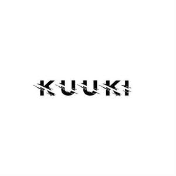

Trade Mark Journal No.2025/041 10 October 2025
UK00004272600 2 October 2025 (18,24,25,28,35,42)
Mark 1
kuuki
Mark 2

- Class 18
- Holdalls for sports clothing; Bags for sports clothing.
- Class 24
- Apparel fabrics.
- Class 25
- Sportswear; Gymwear; Loungewear; Casualwear; Outerwear; Swimwear; Knitwear [clothing]; Playsuits [clothing]; Men's clothing; Triathlon clothing; Ready-to-wear clothing; Maternity sleepwear; Shoes for leisurewear; Moisture-wicking sports bras; Leisurewear; Moisture-wicking sports pants; Athletic clothing; Menswear; Maternity leggings; Shorts [clothing]; Denims [clothing]; Men's underwear; Jogging bottoms [clothing]; Knitwear; Beachwear; Moisture-wicking sports shirts; Clothing for gymnastics; Athletic footwear; Bralettes; Shapewear; Surfwear; Cashmere clothing; Bandeaux [clothing]; Clothing for cycling; Clothing; Clothing for sports; Sports clothing; Footwear; Maternity clothing; Water-resistant clothing; Bottoms [clothing]; Sweat-absorbent underwear; Windproof clothing; Sweatpants; Footwear for women; Sneakers [footwear]; Yoga shirts; Baselayer bottoms; Jackets being sports clothing; Footwear for snowboarding; Dance clothing; Sports garments; Maternity lingerie; Gym shorts; Athletics footwear; Casual clothing; Footwear for sports; Yoga shoes; Casual footwear; Headbands for clothing; Sports footwear; Headbands [clothing]; Beach footwear; Swimsuits; Gloves for apparel; Tops [clothing]; Sweat-absorbent underclothing [underwear]; Footwear for use in sport; Footwear for sport; Clothing for leisure wear; Yoga pants; Beach clothing; Denim pants; Maillots [hosiery]; Gabardines [clothing]; Weatherproof clothing; Baselayer tops; Leisure clothing; Waterproof clothing; Leggings [trousers]; Yoga bottoms; Men's dress socks; Knitted clothing; Lingerie; Leisure footwear; Corsets [clothing, foundation garments]; Bodysuits; Anti-sweat underwear; Denim jeans; Yoga socks; Quilted jackets [clothing]; Underwear (Anti-sweat -); Athletic tights; One-piece playsuits; Tennis pullovers; Clothing for skiing; Denim jackets; Jogging sets [clothing]; Jerseys [clothing]; Inner socks for footwear; Jackets [clothing]; Underwear for women; Sportswear incorporating digital sensors; Yoga tops; Climbing footwear; Garments for protecting clothing; Jogging outfits; Embroidered clothing; Plush clothing; Trainers [footwear]; Sleeveless pullovers; Woven clothing; Clothes for sports; Sports jackets; Sports shoes; Articles of sports clothing; Sports jerseys and breeches for sports; Sports clothing [other than golf gloves]; Sports vests; Sports jerseys; Boots for sports; Sports shirts; Sports bibs; Sports wear; Sports caps; Sports bras; Footwear not for sports; Sports headgear [other than helmets]; Clothes for sport; Sports singlets; Sports caps and hats; Sports socks; Cleats for attachment to sports shoes; Sports pants; Sport shoes; Sports over uniforms; Clothing for children; Clothing for babies; Clothing for infants; Clothing for men, women and children; Infant clothing; Clothes; Jackets (Stuff -) [clothing]; Stuff jackets [clothing]; Gloves [clothing]; Trousers for children; Swim wear for children; Clothing for wear in wrestling games; Belts [clothing]; Belts for clothing; Clothing for cyclists; Golf clothing, other than gloves; Trunks being clothing; Smart clothing; Parts of clothing, footwear and headgear; Bodies [clothing]; Woolen clothing; Babies' pants [clothing]; Children's clothing; Girls' clothing; Socks for infants and toddlers; Overalls for infants and toddlers; Tennis shoes; Tennis shirts; Tennis dresses; Tennis wear; Tennis shorts; Tennis skirts; Tennis socks; Tennis sweatbands; Golf footwear; Gloves as clothing; Linen clothing; Leather clothing; Clothing of leather; Leather (Clothing of -); Golf shoes; Basketball shoes; Handball shoes; Clothing for horse-riding [other than riding hats]; Rainproof clothing; Wristbands [clothing]; Layettes [clothing]; Clothing layettes; Beach clothes; Leisure shoes.
- Class 28
- Athletic protective sportswear; Sports equipment; Tennis uprights [sports equipment]; Supporters (Men's athletic -) [sports articles]; Men's athletic supporters [sports articles]; Bags specially adapted for sports equipment; Golf flags [sports articles]; Balls for sports; Sports balls; Protective cups for sports; Tennis racquets; Rackets [for tennis]; Tennis rackets; Badminton racquets; Racket cases [for tennis or badminton]; Badminton rackets; Vibration dampeners for tennis rackets; Racketball rackets; Lawn tennis racquets; Lawn tennis rackets; Guts for rackets [for tennis or badminton]; Shuttlecocks for badminton; Badminton shuttlecocks; Gut for tennis rackets; Grip bands for tennis rackets; Badminton equipment; Tennis racket presses; Tennis balls; Grip bands for badminton rackets; Strings for tennis racquets; Tennis nets; Tennis racket covers; Tennis net centre straps; Tennis racquet strings; Strings for tennis rackets; Racquets; Racketball balls; Racquet ball nets; Racquet ball gloves; Tennis ball retrievers; Platform tennis balls; Tennis racket strings; Balls for racket sports; Strings for badminton rackets; Platform tennis paddles; Soft tennis balls; Squash rackets; Covers (Shaped -) for badminton rackets; Tennis nets and uprights; Sport balls; Soccer ball bags; Tennis balls [not soft]; Table tennis balls.
- Class 35
- Retail services connected with the sale of clothing and clothing accessories; Retail services in relation to clothing accessories; Retail services in relation to fashion accessories.
- Class 42
- Design of clothing, footwear and headgear.
Kuuki Official Ltd